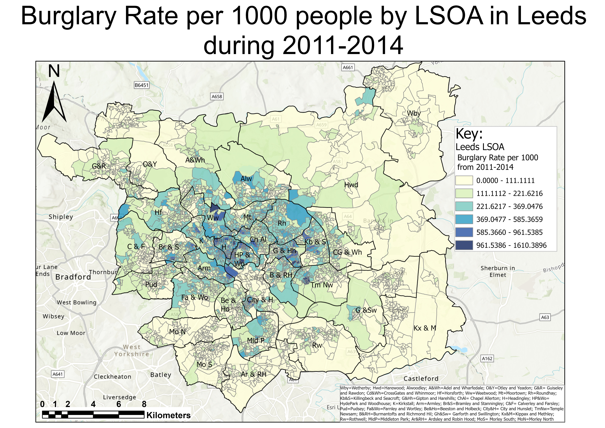
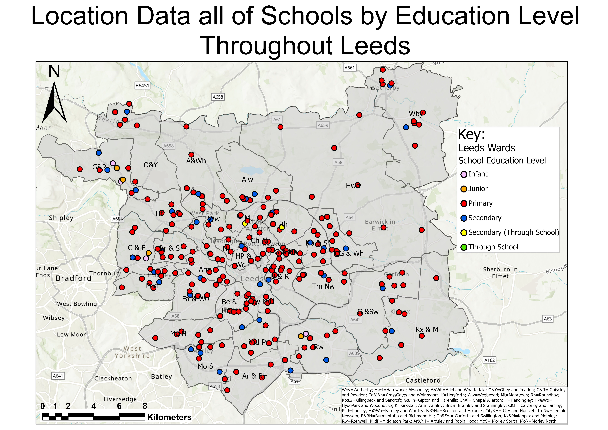

Leeds Demographics: Where Is Best To Live?
When deciding where to live there are several demographic factors that we can think about to aid the decision-making process. For instance, we can look at the burglary rates and crime data to decide which areas of Leeds have the highest level of crime and burglary and avoid those potentially voltile areas. Below is a map showing burglary rates per 1000 people however, this data was collated from datasets from 2011 to 2014. There is clear trend that the areas of highest burglary rates are the OA's directly above of the City Centre: Hyde Park and Woodhouse; Chapel Allerton; Gipton and Harehills, and Headingley. This provides a pattern/trend of burglary across Leeds, which will most likely closely follow the pattern of burglary rates seen today.

Map showing burglary rates per 1000 people per LSOA throughout Leeds (Data collated from 2011-2014 and aggregated with 2011 Census OA's).
Another factor for choosing where to live is the location of schools. This factor is particulary important for families with young children as each school will have their own catchment areas for each education level (primary, secondary etc...). Therefore, this factor can be especially influential. Additional analysis could be performed on this to show the distance of each LSOA to its nearest school per education level.

Map showing school point data per education level throughout Leeds (Data collated through Leeds City Council).
Additional factors that can be considered are general geodemographic classifications. For instance, areas where there are young populations, mainly full-time students might aid individuals to invest in a property at that location or dissuade them from that area. Below is a geodemographic classification map created through 2011 Census variables, where areas are classified into clusters based on demographic characteristics. For instance, the cluster centre Challenged Social Renters below might indicate a poorer area. Furthermore, when cross-examined with the burglary rates above, there is a possible correlate between burglary rates and cluster centres 2 and 3 (Young Educated and Challenged Social Renters), inferring that areas with young populations who are students, as well as areas of high rates of low socio-economic occupations and social renters, have some correlation with higher rates of crime. Thus, if an individual is investing/buying a residential property in these locations, increased security might be considered. Additional demographics that could be influential could be ethnicity, where areas with extremely lower diversity could deter those from ethnic minorities. Other factors to consider could be public transport links, pollution rates and green spaces/parks.